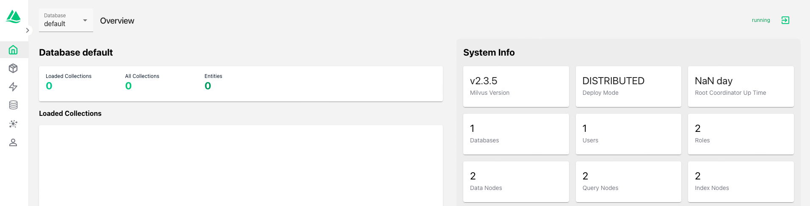

Deploying GPT-in-a-Box NVD Reference Application using GitOps (FluxCD)
stateDiagram-v2
direction LR
state DeployLLMV1 {
[*] --> BootStrapMgmtCluster
BootStrapMgmtCluster --> BootStrapDevCluster
BootStrapDevCluster --> MonitorResourcesDeployment
MonitorResourcesDeployment --> [*]
}
[*] --> PreRequisites
PreRequisites --> DeployLLMV1
DeployLLMV1 --> TestLLMApp : next section
TestLLMApp --> [*]Bootstrap Management Cluster
A .envfile is provided at $HOME/nainai-llm-fleet-infra folder for ease of configuration. We need to make copies of this for mgmt-cluster and dev-cluster kubernetes clusters that you deployed in the previous sections.
-
Set
K8S_CLUSTER_NAMEenvironment variable and make a copy of./.env.sample.yamlformgmt-clusterkubernetes cluster -
Open
.env.mgmt-cluster.yamlfile in VSC -
Change the highlighted fields to match your information (see Example file)
Note
There are a few yaml key value pair blocks of configuration to be updated in
.env.mgmt-cluster.yamlfileRemember to use your own information for the following:
- Github repo and api token
- Docker registry information - for container downloads without rate limiting
- Prism Central/Element details
- Nutanix Objects store and bucket details (for Milvus)
- Two IPs for KubeVIP to assign to Ingress and Istio
- Nutanix NFS share to store the
llama-2-13b-chatmodel
.env.sample.yaml 1 2 3 4 5 6 7 8 9 10 11 12 13 14 15 16 17 18 19 20 21 22 23 24 25 26 27 28 29 30 31 32 33 34 35 36 37 38 39 40 41 42 43 44 45 46 47 48 49 50 51 52 53 54 55 56 57 58 59 60 61 62 63 64 65 66 67 68 69 70 71 72 73 74 75 76 77 78 79 80 81 82 83 84 85 86 87 88 89 90 91 92 93 94 95 96 97 98 99 100 101 102 103 104 105 106 107 108 109 110 111 112 113 114 115 116 117 118 119 120 121 122 123 124 125 126 127 128 129 130 131 132 133 134 135 136 137 138 139 140 141 142 143 144 145 146 147 148 149 150 151 152 153 154 155 156 157 158 159 160 161 162 163 164 165 166 167 168 169 170 171 172 173 174 175 176 177 178 179 180 181 182 183 184 185 186 187 188 189 190 191 192 193 194 195 196 197 198 199 200 201 202 203 204 205 206 207 208 209 210 211 212 213 214 215 216 217 218 219
k8s_cluster: ## kubernetes distribution - supported "nke" "kind" distribution: nke ## kubernetes cluster name name: _required ## cluster_profile_type - anything under clusters/_profiles (e.g., llm-management, llm-workloads, etc.) profile: _required ## environment name - based on profile selected under clusters/_profiles/<profile>/<environment> (e.g., prod, non-prod, etc.) environment: _required ## docker hub registry configs registry: docker_hub: user: _required password: _required ## nvidia gpu specific configs gpu_operator: enabled: false version: v23.9.0 cuda_toolkit_version: v1.14.3-centos7 ## time slicing typically only configured on dev scenarios. ## ideal for jupyter notebooks time_slicing: enabled: false replica_count: 2 flux: ## flux specific configs for github repo github: repo_url: _required repo_user: _required repo_api_token: _required infra: ## Global nutanix configs nutanix: ## Nutanix Prism Creds, required to download NKE creds prism_central: enabled: false # endpoint: _required_if_enabled # user: _required_if_enabled # password: _required_if_enabled ## Nutanix Objects Store Configs objects: enabled: false # host: _required_if_enabled # port: _required_if_enabled # region: _required_if_enabled # use_ssl: _required_if_enabled # access_key: _required_if_enabled # secret_key: _required_if_enabled services: ##################################################### ## Required variables for kube-vip and depedent services ## kube-vip specific configs required for any services needing to be configured with LoadBalancer Virtual IP Addresses kube_vip: enabled: false ## Used to configure default global IPAM pool. A minimum of 2 ips should be provide in a range ## For Example: ipam_range: 172.20.0.22-172.20.0.23 #ipam_range: _required_if_enabled ## required for all platform services that are leveraging nginx-ingress nginx_ingress: enabled: false version: 4.8.3 ## Virtual IP Address (VIP) dedicated for nginx-ingress controller. ## This will be used to configure kube-vip IPAM pool to provide Services of Type: LoadBalancer ## Example: vip: 172.20.0.20 #vip: _required_if_enabled ## NGINX Wildcard Ingress Subdomain used for all default ingress objects created within cluster ## For DEMO purposes, it is common to prefix subdomain with cluster-name as each cluster would require dedicated wildcard domain. ## EXISTING A Host DNS Records are pre-requisites. Example: If DNS is equal to *.example.com, then value is example.com ## For DEMO purposes, you can leverage the NIP.IO with the nginx_ingress vip and self-signed certificates. ## For Example: wildcard_ingress_subdomain:flux-kind-local.172.20.0.20.nip.io #wildcard_ingress_subdomain: _required_if_enabled ## Wildcard Ingress Subdomain for management cluster. ## For DEMO purposes, you can leverage the NIP.IO with the nginx_ingress vip and self-signed certificates #management_cluster_ingress_subdomain: _required_if_enabled istio: enabled: false version: 1.17.2 ## Virtual IP Address (VIP) dedicated for istio ingress gateway. ## This will be used to configure kube-vip IPAM pool to provide Services of Type: LoadBalancer ## This address should be mapped to wildcard_ingress_subdomain defined below. For Example: vip: 172.20.0.21 #vip: _required_if_enabled ## Istio Ingress Gateway - Wildcard Subdomain used for all knative/kserve llm inference endpoints. ## EXISTING A Host DNS Records are pre-requisites. Example: If DNS is equal to *.llm.example.com, then value is llm.example.com ## If leveraging AWS Route 53 DNS with Let's Encrypt (below), make sure to enable/configure AWS credentials needed to ## support CertificateSigningRequests using ACME DNS Challenges. ## For DEMO purposes, you can leverage the NIP.IO with the nginx_ingress vip and self-signed certificates. ## For Example: llm.flux-kind-local.172.20.0.21.nip.io #wildcard_ingress_subdomain: _required_if_enabled cert_manager: ## if enabled - cluster issuer will be self-signed-issuer enabled: false version: v1.13.5 ## if aws_route53_acme_dns.enabled - the cluster issuer across all services will be set to "letsencrypt-issuer" ## Following AWS Route53 Access Creds required for Lets Encrypt ACME DNS Challenge ## For additional details, https://cert-manager.io/docs/configuration/acme/dns01/route53/ ## minimum supported cert-manager version is v1.9.1 https://cert-manager.io/docs/releases/release-notes/release-notes-1.9/#v191 aws_route53_acme_dns: enabled: false # email: _required_if_enabled # zone: _required_if_enabled # hosted_zone_id: _required_if_enabled # region: _required_if_enabled # key_id: _required_if_enabled # key_secret: _required_if_enabled ## do not disable kyverno unless you know what you're doing ## this is needed to keep docker hub creds synchronized between namespaces. kyverno: enabled: true version: 3.1.4 ## the following versions and dependencies kserve are aligned with GPT In A Box Opendocs ## the only exception is with cert-manager due to usage of aws route 53 ## https://opendocs.nutanix.com/gpt-in-a-box/kubernetes/v0.2/getting_started/ kserve: enabled: false version: v0.11.2 knative_serving: enabled: false version: knative-v1.10.1 knative_istio: enabled: false version: knative-v1.10.0 ## The following components are leveraged to support Nutanix Validated Designs ## The NVD for GPT in a Box leverages a RAG Pipeline with Serverless Functions ## to demonstrate end to end workflow with Nutanix Integration ## Milvus is vector database milvus: enabled: false version: 4.1.13 milvus_bucket_name: milvus ## Knative Eventing used to receive Event notifications from Nutanix Objects Document Bucket knative_eventing: enabled: false version: knative-v1.10.1 ## Kafka is messaging broker used by both knative eventing Document Ingestion serverless function ## and integrates with Nutanix Objects Events Notification Kafka Endpoints ## Kafka is also leveraged by Milvus as a Messaging Broker for Milvus related events, as opposed to the default Apache Pulsar kafka: enabled: false version: 26.8.5 ## OpenTelemetry Collector version is used for both the Deployment and Daemon is used to collect data for monitoring opentelemetry_collector: enabled: false version: 0.80.1 ## OpenTelemetry Operator is used to deploy opentelemetry components opentelemetry_operator: enabled: false version: 0.47.0 ## Uptrace is Observability / Monitoring UI uptrace: enabled: false version: 1.5.7 ## Jupyterhub is deployed on non-prod workload clusters in NVD Reference jupyterhub: enabled: false version: 3.1.0 redis: enabled: false version: 18.1.6 elasticsearch: enabled: false version: 19.13.10 kubernetes_dashboard: enabled: false version: 7.3.2 weave_gitops: enabled: true version: 4.0.36 apps: ## Required GPT NVD Reference Application Helm Chart Configs gptnvd_reference_app: enabled: false version: 0.2.7 #documents_bucket_name: documents01 ## Required NAI LLM Helm Chart Configs ### huggingFaceToken required when useExistingNFS. This will download model when llm is initialized nai_helm: enabled: false version: 0.1.1 #model: llama2_7b_chat #revision: 94b07a6e30c3292b8265ed32ffdeccfdadf434a8 #maxTokens: 4000 #repPenalty: 1.2 #temperature: 0.2 #topP: 0.9 #useExistingNFS: false #nfs_export: /llm-model-store #nfs_server: _required #huggingFaceToken: _required.env.mgmt-cluster.yaml 1 2 3 4 5 6 7 8 9 10 11 12 13 14 15 16 17 18 19 20 21 22 23 24 25 26 27 28 29 30 31 32 33 34 35 36 37 38 39 40 41 42 43 44 45 46 47 48 49 50 51 52 53 54 55 56 57 58 59 60 61 62 63 64 65 66 67 68 69 70 71 72 73 74 75 76 77 78 79 80 81 82 83 84 85 86 87 88 89 90 91 92 93 94 95 96 97 98 99 100 101 102 103 104 105 106 107 108 109 110 111 112 113 114 115 116 117 118 119 120 121 122 123 124 125 126 127 128 129 130 131 132 133 134 135 136 137 138 139 140 141 142 143 144 145 146 147 148 149 150 151 152 153 154 155 156 157 158 159 160 161 162 163 164 165 166 167 168 169 170 171 172 173 174 175 176 177 178 179 180 181 182 183 184 185 186 187 188 189 190 191 192 193 194 195 196 197 198 199 200 201 202 203 204 205 206 207 208 209 210 211 212 213 214 215 216 217 218 219
k8s_cluster: ## kubernetes distribution - supported "nke" "kind" distribution: nke ## kubernetes cluster name name: mgmt-cluster ## cluster_profile_type - anything under clusters/_profiles (e.g., llm-management, llm-workloads, etc.) profile: llm-management ## environment name - based on profile selected under clusters/_profiles/<profile>/<environment> (e.g., prod, non-prod, etc.) environment: non-prod ## docker hub registry configs registry: docker_hub: user: your_docker_username password: your_docker_password ## nvidia gpu specific configs gpu_operator: enabled: false version: v23.9.0 cuda_toolkit_version: v1.14.3-centos7 ## time slicing typically only configured on dev scenarios. ## ideal for jupyter notebooks time_slicing: enabled: false replica_count: 2 flux: ## flux specific configs for github repo github: repo_url: https://github.com/<your_github_org>/nai-llm-fleet-infra.git repo_user: your_github_username repo_api_token: your_github_api_token infra: ## Global nutanix configs nutanix: ## Nutanix Prism Creds, required to download NKE creds prism_central: enabled: true endpoint: <PC FQDN> user: <PC user> password: <PC password> ## Nutanix Objects Store Configs objects: enabled: true host: objects.example.com port: 80 region: us-east-1 use_ssl: false access_key: your_bucket_access_key secret_key: your_bucket_secret_key services: ##################################################### ## Required variables for kube-vip and depedent services ## kube-vip specific configs required for any services needing to be configured with LoadBalancer Virtual IP Addresses kube_vip: enabled: true ## Used to configure default global IPAM pool. A minimum of 2 ips should be provide in a range ## For Example: ipam_range: 172.20.0.22-172.20.0.23 ipam_range: 10.x.x.214-10.x.x.215 ## required for all platform services that are leveraging nginx-ingress nginx_ingress: enabled: true version: 4.8.3 ## Virtual IP Address (VIP) dedicated for nginx-ingress controller. ## This will be used to configure kube-vip IPAM pool to provide Services of Type: LoadBalancer ## Example: vip: 172.20.0.20 vip: 10.x.x.214 ## NGINX Wildcard Ingress Subdomain used for all default ingress objects created within cluster ## For DEMO purposes, it is common to prefix subdomain with cluster-name as each cluster would require dedicated wildcard domain. ## EXISTING A Host DNS Records are pre-requisites. Example: If DNS is equal to *.example.com, then value is example.com ## For DEMO purposes, you can leverage the NIP.IO with the nginx_ingress vip and self-signed certificates. ## For Example: wildcard_ingress_subdomain:flux-kind-local.172.20.0.20.nip.io wildcard_ingress_subdomain: mgmt-cluster.10.x.x.214.nip.io ## Wildcard Ingress Subdomain for management cluster. ## For DEMO purposes, you can leverage the NIP.IO with the nginx_ingress vip and self-signed certificates management_cluster_ingress_subdomain: mgmt-cluster.10.x.x.214.nip.io istio: enabled: false version: 1.17.2 ## Virtual IP Address (VIP) dedicated for istio ingress gateway. ## This will be used to configure kube-vip IPAM pool to provide Services of Type: LoadBalancer ## This address should be mapped to wildcard_ingress_subdomain defined below. For Example: vip: 172.20.0.21 #vip: _required_if_enabled ## Istio Ingress Gateway - Wildcard Subdomain used for all knative/kserve llm inference endpoints. ## EXISTING A Host DNS Records are pre-requisites. Example: If DNS is equal to *.llm.example.com, then value is llm.example.com ## If leveraging AWS Route 53 DNS with Let's Encrypt (below), make sure to enable/configure AWS credentials needed to ## support CertificateSigningRequests using ACME DNS Challenges. ## For DEMO purposes, you can leverage the NIP.IO with the nginx_ingress vip and self-signed certificates. ## For Example: llm.flux-kind-local.172.20.0.21.nip.io #wildcard_ingress_subdomain: _required_if_enabled cert_manager: ## if enabled - cluster issuer will be self-signed-issuer enabled: false version: v1.13.5 ## if aws_route53_acme_dns.enabled - the cluster issuer across all services will be set to "letsencrypt-issuer" ## Following AWS Route53 Access Creds required for Lets Encrypt ACME DNS Challenge ## For additional details, https://cert-manager.io/docs/configuration/acme/dns01/route53/ ## minimum supported cert-manager version is v1.9.1 https://cert-manager.io/docs/releases/release-notes/release-notes-1.9/#v191 aws_route53_acme_dns: enabled: false # email: _required_if_enabled # zone: _required_if_enabled # hosted_zone_id: _required_if_enabled # region: _required_if_enabled # key_id: _required_if_enabled # key_secret: _required_if_enabled ## do not disable kyverno unless you know what you're doing ## this is needed to keep docker hub creds synchronized between namespaces. kyverno: enabled: true version: 3.1.4 ## the following versions and dependencies kserve are aligned with GPT In A Box Opendocs ## the only exception is with cert-manager due to usage of aws route 53 ## https://opendocs.nutanix.com/gpt-in-a-box/kubernetes/v0.2/getting_started/ kserve: enabled: false version: v0.11.2 knative_serving: enabled: false version: knative-v1.10.1 knative_istio: enabled: false version: knative-v1.10.0 ## The following components are leveraged to support Nutanix Validated Designs ## The NVD for GPT in a Box leverages a RAG Pipeline with Serverless Functions ## to demonstrate end to end workflow with Nutanix Integration ## Milvus is vector database milvus: enabled: true version: 4.1.13 milvus_bucket_name: mgmt-cluster-milvus ## Knative Eventing used to receive Event notifications from Nutanix Objects Document Bucket knative_eventing: enabled: false version: knative-v1.10.1 ## Kafka is messaging broker used by both knative eventing Document Ingestion serverless function ## and integrates with Nutanix Objects Events Notification Kafka Endpoints ## Kafka is also leveraged by Milvus as a Messaging Broker for Milvus related events, as opposed to the default Apache Pulsar kafka: enabled: true version: 26.8.5 ## OpenTelemetry Collector version is used for both the Deployment and Daemon is used to collect data for monitoring opentelemetry_collector: enabled: true version: 0.80.1 ## OpenTelemetry Operator is used to deploy opentelemetry components opentelemetry_operator: enabled: true version: 0.47.0 ## Uptrace is Observability / Monitoring UI uptrace: enabled: true version: 1.5.7 ## Jupyterhub is deployed on non-prod workload clusters in NVD Reference jupyterhub: enabled: false version: 3.1.0 redis: enabled: false version: 18.1.6 elasticsearch: enabled: false version: 19.13.10 kubernetes_dashboard: enabled: false version: 7.3.2 weave_gitops: enabled: true version: 4.0.36 apps: ## Required GPT NVD Reference Application Helm Chart Configs gptnvd_reference_app: enabled: false version: 0.2.7 #documents_bucket_name: documents01 ## Required NAI LLM Helm Chart Configs ### huggingFaceToken required when useExistingNFS. This will download model when llm is initialized nai_helm: enabled: false version: 0.1.1 #model: llama2_7b_chat #revision: 94b07a6e30c3292b8265ed32ffdeccfdadf434a8 #maxTokens: 4000 #repPenalty: 1.2 #temperature: 0.2 #topP: 0.9 #useExistingNFS: false #nfs_export: /llm-model-store #nfs_server: _required #huggingFaceToken: _required -
Install workstation packages and export
krewpath -
Generate and Validate Configurations
Verify the generated cluster configs
-
Validate Encrypted Secrets and make sure the values match what you entered in
.env.mgmt-cluster.yamlfile -
Select New (or Switching to Existing) Cluster and Download NKE creds for
mgmt-cluster -
Run Flux Bootstrapping -
task bootstrap:silentNote
This may take up to 10 minutes.
If there are any issues, update local git repo, push up changes and run
task flux:reconcile -
Monitor on New Terminal to make sure
READYstatus isTRUEfor all resources using the following commandNote
If there are any issues, update local git repo, push up changes and run
task flux:reconcile
Set Kafka Endpoint in Nutanix Objects
After successful bootstrap of the mgmt-cluster, get the Kafka ingress endpoint to set the value in Nutanix Objects store.
Nutanix Objects store will send a message to kafka endpoint if an object gets stored in the bucket.
-
On VSC terminal on the jumpbox VM, get the ingress endpoints
-
Copy the URL value in HOSTS column (note this will be different for you) and add the port number
9096as follows -
Check if the Kafka endpoint is alive and well
-
Login to Prism Central, go to Objects and choose the ntnx-objects store (Objects store name could be different for you)
- Go to Settings > Notification Endpoints
- Choose the Kafka tab
- Toggle the Enable button to enabled
-
Paste the ingress endpoint of your Kafka instance
9. Click on Save
Configure documents01 Bucket to send Messages to Kafka Endpoint
- Go to Buckets
- Click on
documents01bucket and choose Data Event Notification from the top menu - Click on
Add Rule - Choose the following:
- Endpoint - Kafka
- Scope - All Objects
- Data Events - All Events
- Click on Save
Check Milvus Database Status
To make sure Milvus database and associated components are running.
-
On VSC terminal, check if the Kafka endpoint is alive and well
-
Get the Milvus ingress endpoint
-
Copy the URL value in HOSTS column (note this will be different for you)
-
Paste the URL in the browser and you should be able to see Milvus database management page.
-
There is no user name and password for Milvus database as this is a test environment. Feel free to update password for
rootuser in the user settings.